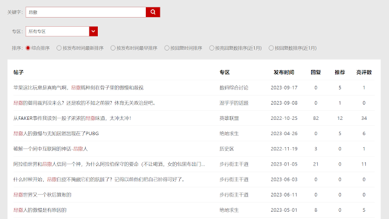
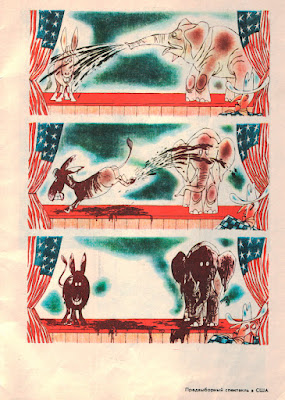
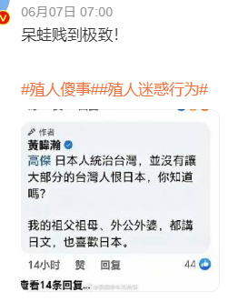
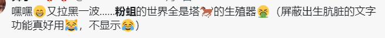
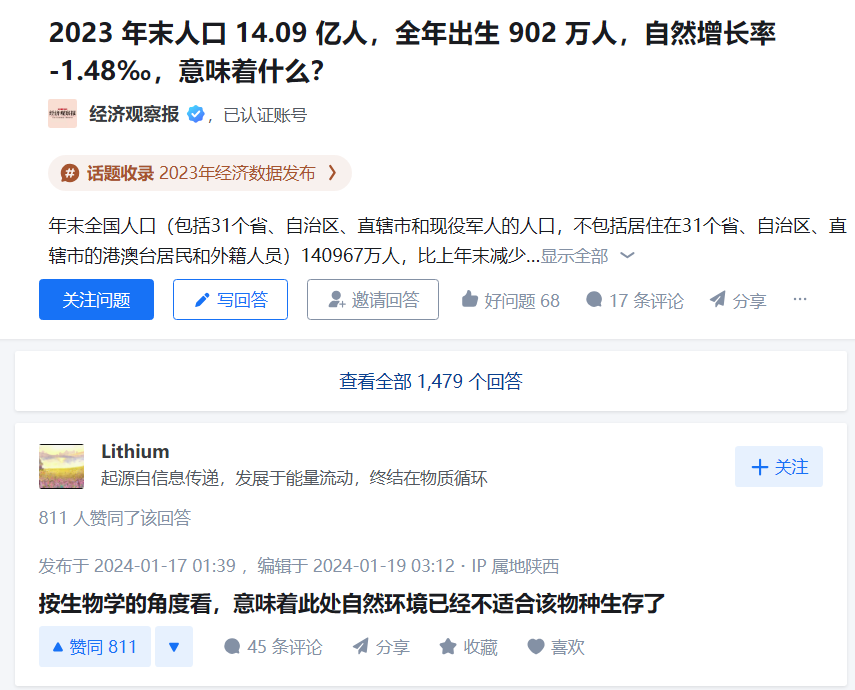
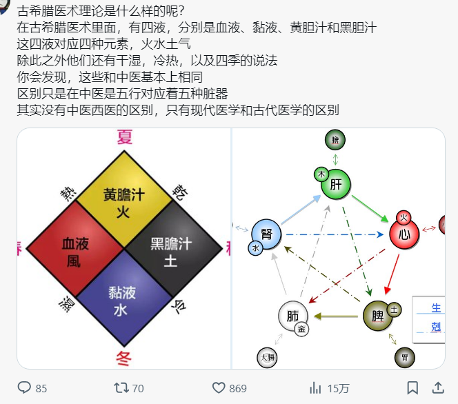
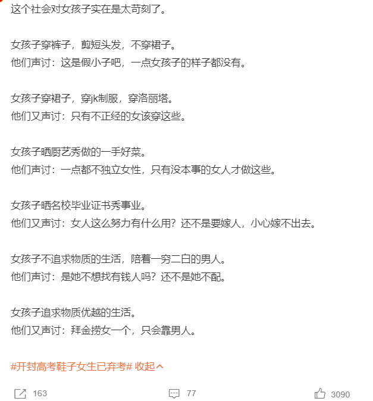
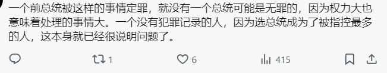

元键政3：与低水平言论缠斗意义不大 - Meta Political Discussion 3：It's insignificant to engage in a battle of words with low-level arguments
有时打开抖音，快手，推特，搜狐新闻，百家号，虎扑等网站/论坛，用汉语搜索一些政治有关的词条，看到铺天盖地的民族主义，仇恨言论，性别对立，刻板印象，以及不知道哪里来的小道消息，花边新闻，色情下流的图片，我实在是感觉中国人没救了。下图为在虎扑社区搜索“昂撒”的结果。
Sometimes when I go to websites like Douyin, Kuaishou, Twitter, Sohu News, Baijia, and Hupu (They are all common applications/bbses in China) and search for political terms in Chinese, I am overwhelmed by the prevalent nationalism, hate speech, gender conflict, stereotypes, and unverified gossip and salacious news, often accompanied by vulgar images. It sometimes disheartens me so much that I have a feeling that "Chinese people are really hopeless." The screenshot below is the search result for the "昂撒" (Short for Anglo-Saxons, sometimes with a derogatory connotation) on Hupu, a platform with a large number of extreme nationalists.

但是我本不应该和这种言论，这种人有任何瓜葛。我相信，不敢说所有，但是大多数比较火的键政自媒体，都是精心设计过他们的内容的。很明显，他们的受众肯定不包括我，看见不爽，划走就完事了。至于说，中国人是否“有救”，《论语》有云：君子之德风，小人之德草，草上之风必偃。
However, I shouldn't have any involvement with such remarks or people. I believe —— though I can't say for all —— most popular political self-media content is meticulously crafted. Clearly, their audience doesn't include me. If someone find it unpleasant, they can just swipe away. As for whether "there is hope" for Chinese people, there is a famous saying in "the Analects": The virtue of a gentleman is like the wind; the virtue of a petty person is like grass. When the wind blows over the grass, the grass must bend.
与低水平言论接触多了，会有一个严重的问题：人都是倾向于模仿的。假如我是一个神友（自由派），一直专挑墙内的不堪入目的言论看，虽然很爽，但我会理所当然地认为：键政就是用污言秽语骂对方，我甚至还会说：对待流氓就应该比流氓还流氓。可是只要用脑子想一想就知道，高水平和低水平的兔友（爱国者）都肯定存在，神友也是如此，当我与低水平的兔友缠斗时，我自己也变成了一个低水平的神友，我们劣化了政治辩论，就像下图那样。这也是我三五年前犯的错误。
Constant exposure to negative and low-level discourse comes with a major risk: our tendency to mimic. Assume I am a liberal. Suppose Ideliberately select and read detrimental comments from within the 'Great Firewall'. I am likely to adopt a similar offensive language to hit them back. What's more, I'm likely believe that to handle an online 'hooligan', you must be more 'hooligan' than the 'hooligan' itself. However, just as there can be high and low-level patriots, there can be high and low-level liberals too. Engaging in a low-level discourse makes me the low-level liberal as well, degrading the overall political debate, just like the graph below. This was also a mistake I made several years ago.

劣化的政治辩论 - Deteriorated political debate
说了这么多，什么是低水平言论呢？这里我把键政中经常遇到的 我认为的 “低水平言论” 总结为以下几点，依照其“水平”高低和是否容易区分排序。
What exactly are low-level remarks? Here, I summarize the types of "low-level remarks" often encountered in online political discussions, ranking them by their "level" and ease of identification.
1：谩骂与人身攻击 - Insults and Personal Attacks
这种言论是水平最低的，也是最容易发现的，除了能给其他人提供一些“情绪”价值之外，毫无任何意义。
These are the lowest level remarks and the easiest to spot. Besides providing some "emotional" value to others, they are utterly meaningless.


2：谣言，和未证实的信息 - Rumors and Unverified Information
各种话题都大量充斥着谣言和未正式的信息，尤其是与政治有关的话题。这种言论的检测难度可高可低，主要还是需要自己对相关话题有一定了解。请注意，官方发布的言论也有可能是谣言。
Various topics are flooded with rumors and unverified information, especially those related to politics. The difficulty of detecting these remarks can vary; it mainly requires a certain level of understanding of the relevant topics. Note that even official statements can be rumors.
谣言的量是相当相当大的，在某些平台，谣言的数量要比真实新闻的数量还多。在这里非常感谢各大辟谣平台的工作。
The volume of rumors is enormous, and on some platforms, there are more rumors than real news. A big thanks to all the rumor-debunking platforms for their work.
3：阴阳怪气，冷嘲热讽的言论 - Sarcasm and Mockery
这也是一种弱化的谩骂，非常常见于知乎，微博，贴吧。这种言论也是最容易煽动读者情绪的。
从这一阶段开始，这些低水平的言论已经变得比较“可以接受”了，体面的键政人也会偶尔使用。不过，这还不是有意义的键政，当然也不需要理会。
This is a milder form of insults, very common on platforms like Zhihu, Weibo, and forums. These remarks are also the easiest to incite readers' emotions.
From this stage onward, these low-level remarks become somewhat "acceptable," and even respectable commentators might occasionally use them. However, this is still not meaningful political discussion and does not need to be taken seriously.

4：简单化和极端化 - Simplification and Extremism
这种言论是相当难以区分的，尤其是带有情绪的言论。主要的原因在于，读者不一定了解相关的话题，而一众解释中，最容易接受的往往是最简单的。
These remarks are quite difficult to identify, especially those with emotional content. The main reason is that readers may not understand the related topics, and the simplest explanations are often the easiest to accept.


5：逻辑谬误 - Logical Fallacies
这种言论已经比之前4种好太多了，因为它至少讲逻辑，只是可惜有问题。
These remarks are much better than the previous four because at least they involve logic, even if flawed.

键政是一场群体之间，没有输赢的辩论。几乎没有人会因为其他的言论而改变立场，就算把“对手”打倒了，也不代表“赢家”的立场比他的更正确。在键政过程中，遇到低水平言论，最体面的应对方式就是视而不见，知道自己占上风了就好了。
Online political discussions are a debate with no winners or losers. Almost no one changes their stance because of others' remarks, and even if you defeat your "opponent," it doesn't mean your position is more correct. When encountering low-level remarks during these discussions, the most dignified response is to ignore them, knowing you have the upper hand.
键政之外也是这样，遇到低水平言论，知道谁是对的，谁是错的，自己该怎么做就够了。既没有必要去和它们争论，更没有必要被他们影响。
This also applies outside of online discussions. When encountering low-level remarks, just know who is right and wrong and what you should do. There's no need to argue with them or be influenced by them.